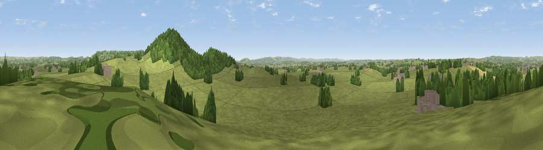

Viewpoint near East Stour
#25402 in England · top 46% of its area beats it · near East StourWhere it is
The exact computed spot (ST 81475 23075). Click the marker for map links.
The view, rendered

A 360° render of this exact spot computed from the terrain model, tree cover and land cover — summer colours, afternoon light, calibrated against photographs of famous viewpoints. Real trees, hedges and buildings will differ in detail.
The panorama
Grey silhouette: terrain skyline in each direction (720 bearings, Earth curvature and refraction included). Dashed green: skyline with trees (+15 m) and buildings (+8 m) as obstacles. Blue strip: how far the ground is visible on each bearing.
Where the view opens
Wedge length = distance to the farthest visible ground on that bearing (vegetation-aware). Rings at 10, 25 and 50 km.
What fills the view
84% grassland · 11% woodland · 3% cropland · 2% built-up
Angular shares of the visible panorama (visual magnitude), not map area. Landscape diversity 0.25 (0–1 Shannon).
Key numbers
More beautiful places nearby
The staircase of upgrades: each row has a higher view potential than everything closer. Driving times are estimates from straight-line distance, calibrated against real road routing — check an actual route before setting out.
| Place | Direction | Drive | Score |
|---|---|---|---|
| Viewpoint near Stour Row | ESE · 1 km | ~3 min | 70.0 |
| Melbury Hill | ESE · 7 km | ~14 min | 72.5 |
| Viewpoint near Child Okeford | SSE · 11 km | ~20 min | 72.8 |
| Hambledon Hill | SSE · 11 km | ~21 min | 74.6 |
| Viewpoint near Berwick St John | ESE · 11 km | ~21 min | 78.2 |
| Viewpoint near Nettlecombe | SW · 39 km | ~59 min | 79.3 |
| Eggardon Hill | SW · 39 km | ~59 min | 80.3 |
| Viewpoint near Askerswell | SW · 39 km | ~59 min | 81.7 |
51.00676, -2.26541 · source: screening · position refined by local search. Computed location — check access rights before visiting.